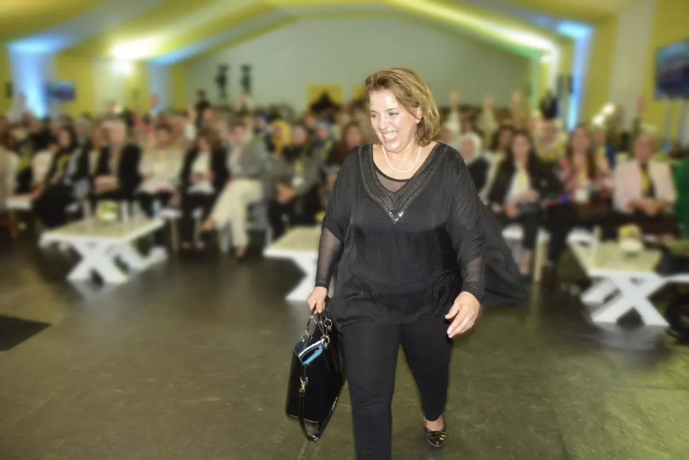

لم تعد الاحتجاجات التي تشهدها بعض الدول الأوروبية، ومنها فرنسا وإسبانيا والبرتغال وبلجيكا، مجرد تحركات مطلبية مرتبطة بالتعليم والسكن والأجور وارتفاع تكاليف المعيشة، بل باتت تعكس أزمة أعمق في علاقة الأجيال الجديدة بالمجتمع والمؤسسات. إنها تطرح سؤالاً جوهرياً حول قدرة الديمقراطية على الوفاء بوعودها الاجتماعية، وضمان مستقبل لا يصبح فيه الاستقرار امتيازاً، ولا يتحول فيه الطموح إلى عبء على أصحابه.
تكشف هذه الاحتجاجات عن اتساع الفجوة بين الجهد الفردي والفرص المتاحة. فبالنسبة إلى فئات من الشباب، لم يعد التعليم والعمل كافيين لضمان الاستقلال الاقتصادي أو الحصول على سكن أو بناء حياة مستقرة. وحين يعجز الاجتهاد عن تحقيق الحد الأدنى من التطلعات، تتراجع الثقة في مسارات الارتقاء الاجتماعي، ويغدو المستقبل مصدر قلق بدل أن يكون أفقاً للأمل.
إن الخطر لا يكمن في أن يرفع الشباب أصواتهم، بل في أن ينتهي بهم الأمر إلى الاعتقاد بأن أصواتهم لا تُسمع، وأن المؤسسات عاجزة عن الاستجابة لتطلعاتهم.
مقالات أخرى
تواصل وصحافة
للصحفيين والمنظمين
لطلبات المقابلات والمشاركة في الندوات والبرامج، أو للحصول على صور رسمية وسيرة مختصرة.